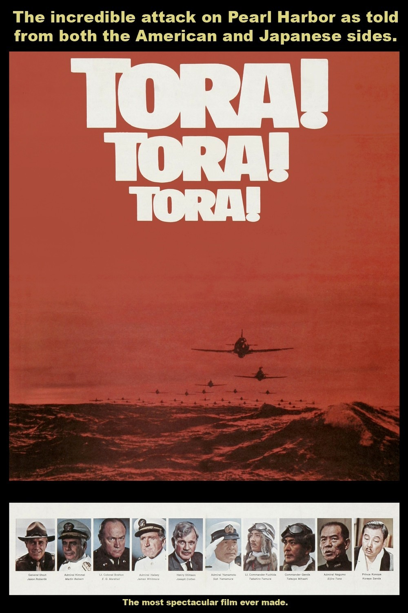

Tora! Tora! Tora!
43rd Academy Awards
(Oscars 1971)
5 Nominations, 1 Award
| Nominations | ||
|---|---|---|
| Category | Nominees | Result |
| Cinematography | Charles F. Wheeler, Masamichi Satoh, Osami Furuya, and Sinsaku Himeda | Nominated |
| Film Editing | Inoue Chikaya, James E. Newcom, and Pembroke J. Herring | Nominated |
| Art Direction | Carl Biddiscombe, Jack Martin Smith, Norman Rockett, Richard Day, Taizoh Kawashima, Walter M. Scott, and Yoshiro Muraki | Nominated |
| Special Visual Effects | A. D. Flowers and L. B. Abbott | Won |
| Sound | Herman Lewis and Murray Spivack | Nominated |